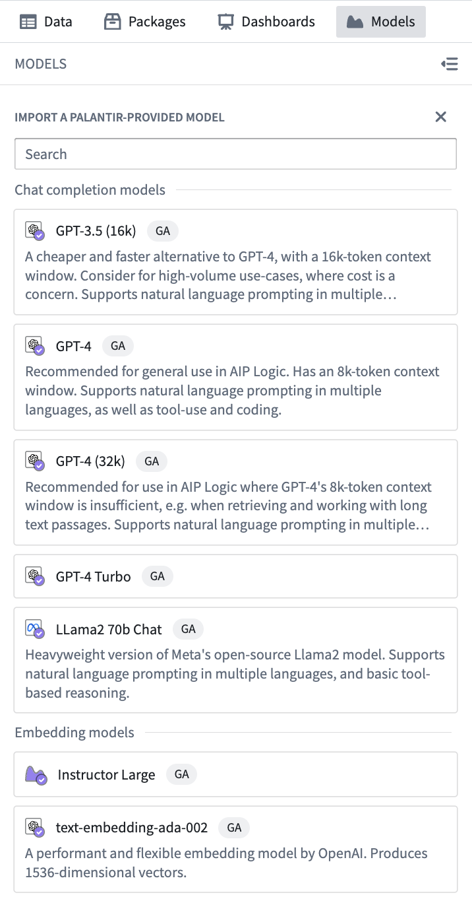
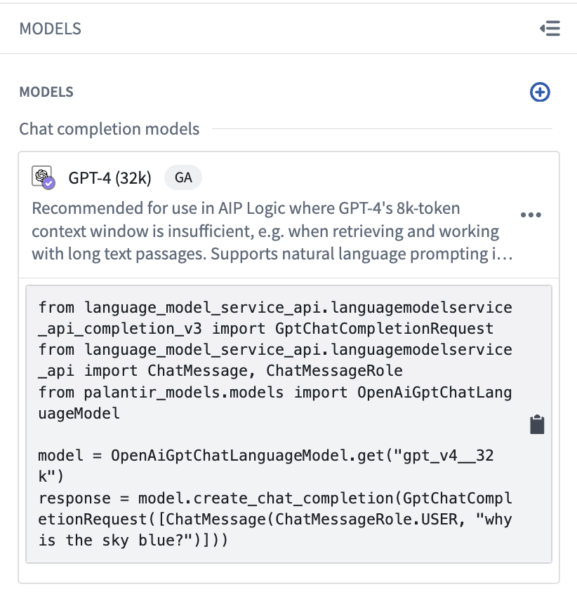
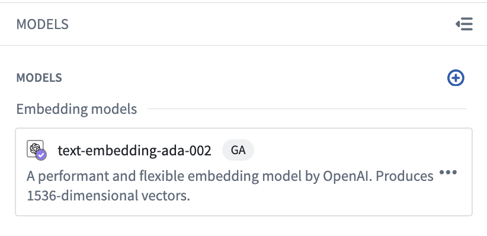
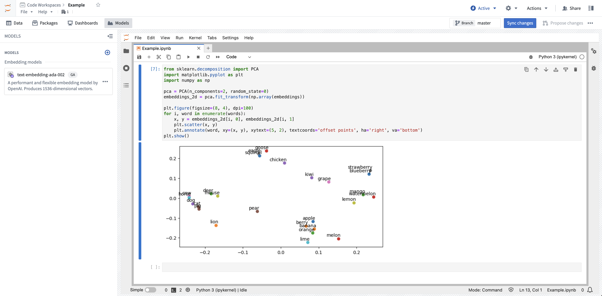

:::callout{theme="neutral" title="Prerequisites"} To use Palantir-provided language models, AIP must first be enabled on your enrollment. :::
Palantir provides a set of language and embedding models which can be used within Jupyter® notebooks. The models can be used through the palantir_models library. This library provides a set of classes that provide bindings to interact with the models.
To add language model support to your notebook, open the packages search panel on the left side of your Code Workspace. Search for palantir_models, then choose Latest. This will copy an install command to your clipboard, which you can then paste into an empty cell and run.
To add a language model to your notebook, open the Models panel on the left side of your Code Workspace. If you have not already imported a model, click Import a Palantir-provided model. If you have already imported a model, you can import additional models by selecting the + icon at the top of the panel.
The panel will then show you a searchable list of models that are available to you. Models are listed in two categories: chat completion models and embedding models. Select the desired model to import it into your Code Workspace.

:::callout{theme="neutral"} Model availability may differ between customers. For more information, contact your Palantir representative. :::
After import, your model will appear in the Models panel. Selecting the model in the Models panel will display a code snippet demonstrating basic functionality for the model.

To get started with the model, click the snippet to copy the code and paste into any cell in your notebook.
In this example, we will use an OpenAI model to answer a question. Assuming you have already imported a model, you can copy the code snippet below into any cell to proceed.
from language_model_service_api.languagemodelservice_api_completion_v3 import GptChatCompletionRequest
from language_model_service_api.languagemodelservice_api import ChatMessage, ChatMessageRole
from palantir_models.models import OpenAiGptChatLanguageModel
model = OpenAiGptChatLanguageModel.get("gpt_v4")
response = model.create_chat_completion(GptChatCompletionRequest([ChatMessage(ChatMessageRole.USER, "why is the sky blue?")]))
Along with generative language models, Palantir also provides embedding models. The following example shows how we can use an embedding model to calculate embeddings for a list of words, and plot the embeddings to visualize them. Each code block below should be treated as its own cell.
First, add the dependencies needed for this example:
!mamba install -y "palantir_models>=0.1795.0" matplotlib numpy scikit-learn
Then make sure you have imported an embedding model in the Models panel. In this example, we will use OpenAI's text-embedding-ada-002 model.

To generate the desired embeddings, we start with a copy of the model snippet and make some modifications as shown below:
from language_model_service_api.languagemodelservice_api_embeddings_v3 import GenericEmbeddingsRequest
from palantir_models.models import GenericEmbeddingModel
fruits = [
"apple", "banana", "orange", "melon", "kiwi", "pear", "grape", "strawberry", "lemon", "lime",
"blueberry", "berry", "mango", "watermelon"
]
animals = [
"dog", "cat", "cow", "eagle", "mouse", "horse", "squirrel", "lion", "deer", "goose", "chicken", "pig"
]
words = fruits + animals
model = GenericEmbeddingModel.get("text-embedding-ada-002")
embeddings = model.create_embeddings(GenericEmbeddingsRequest(inputs=words)).embeddings
Finally, we can use scikit-learn and Matplotlib to visualize our embeddings:
from sklearn.decomposition import PCA
import matplotlib.pyplot as plt
import numpy as np
pca = PCA(n_components=2, random_state=0)
embeddings_2d = pca.fit_transform(np.array(embeddings))
plt.figure(figsize=(8, 4), dpi=100)
for i, word in enumerate(words):
x, y = embeddings_2d[i, 0], embeddings_2d[i, 1]
plt.scatter(x, y)
plt.annotate(word, xy=(x, y), xytext=(5, 2), textcoords='offset points', ha='right', va='bottom')
plt.show()
After running the notebook, you will be presented with a graph of the embeddings:

Jupyter®, JupyterLab®, and the Jupyter® logos are trademarks or registered trademarks of NumFOCUS.
All third-party trademarks (including logos and icons) referenced remain the property of their respective owners. No affiliation or endorsement is implied.